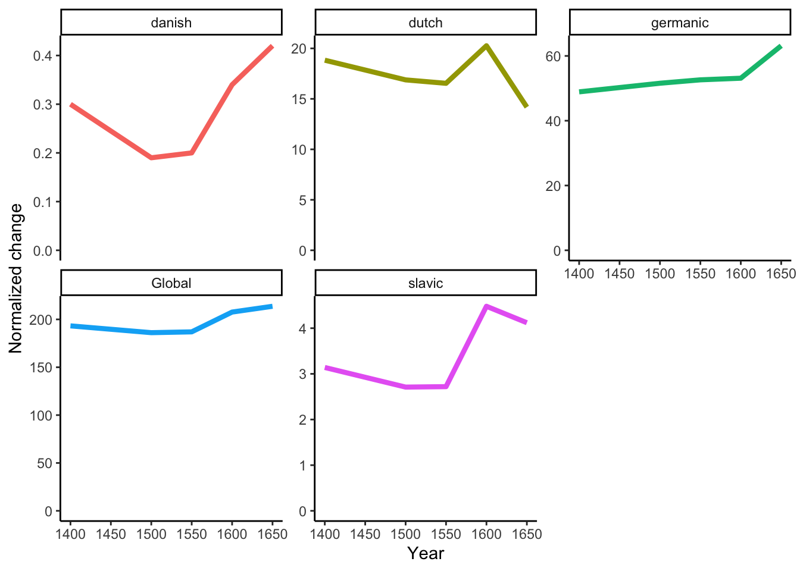
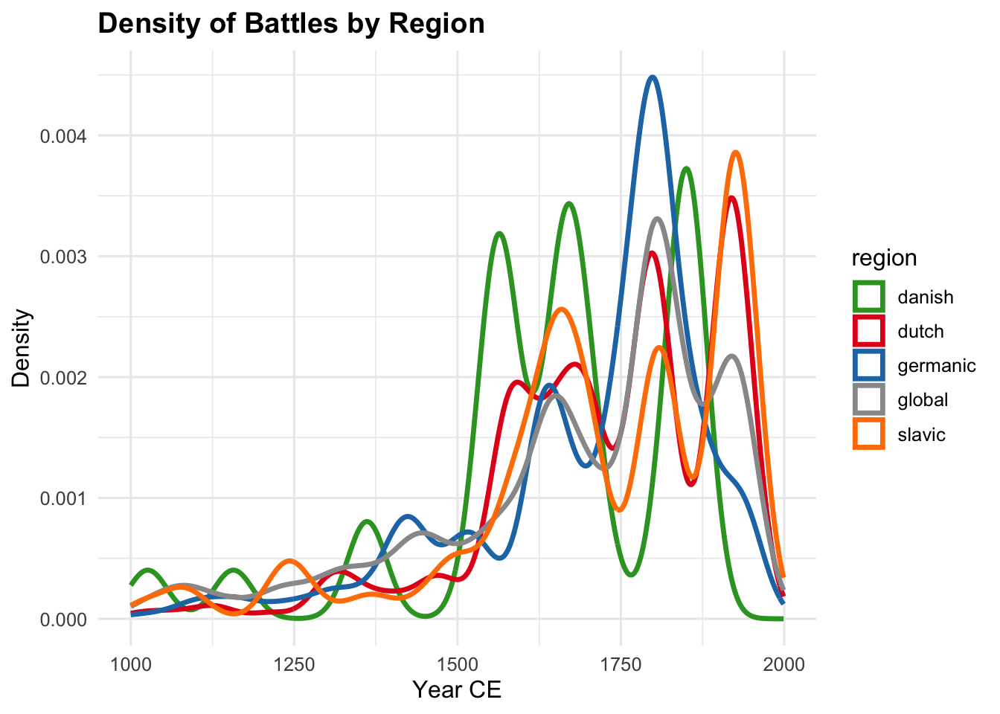
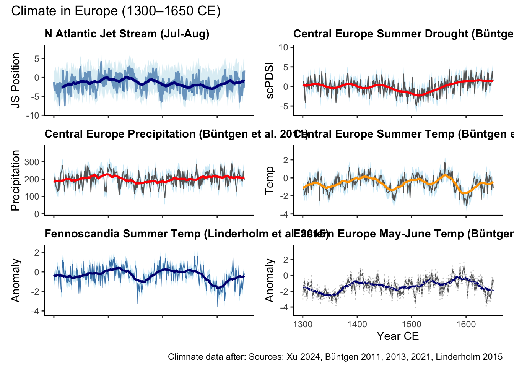
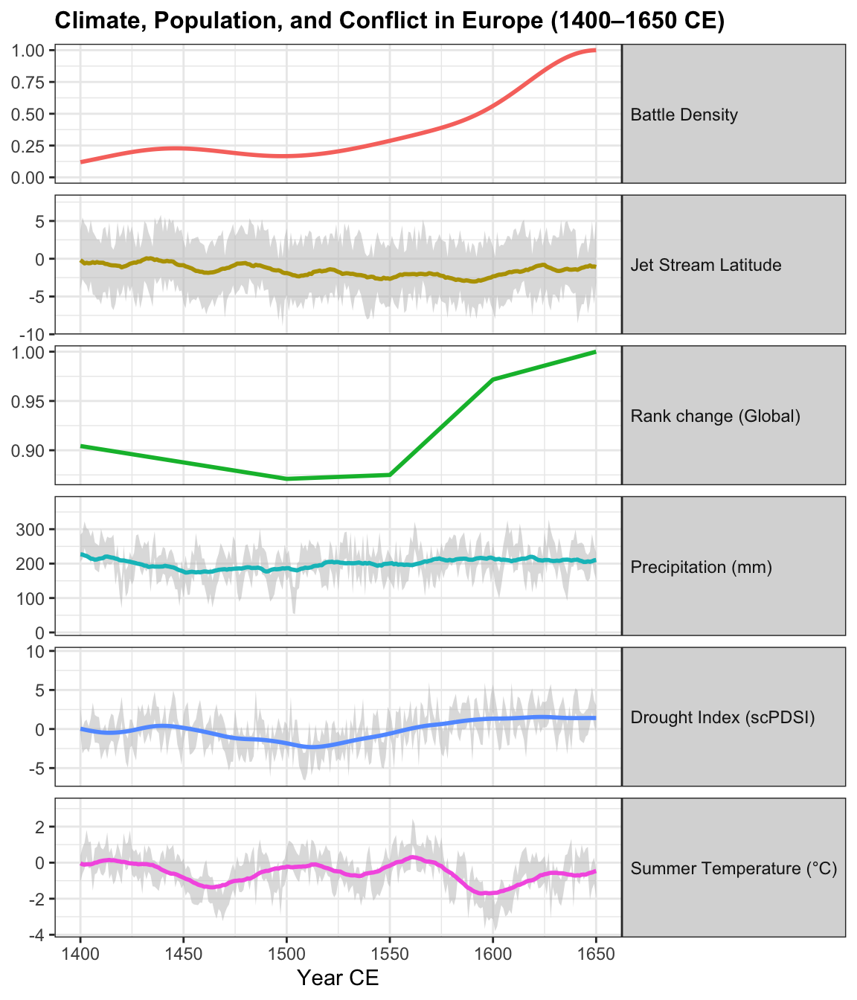
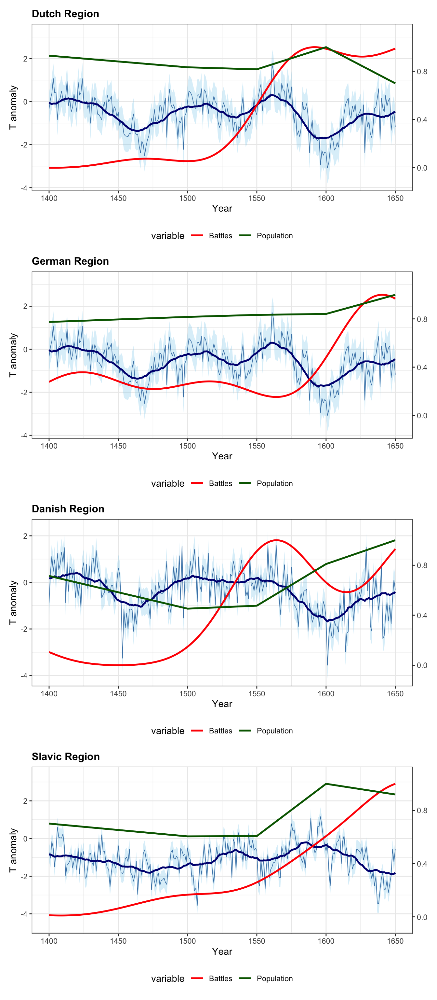
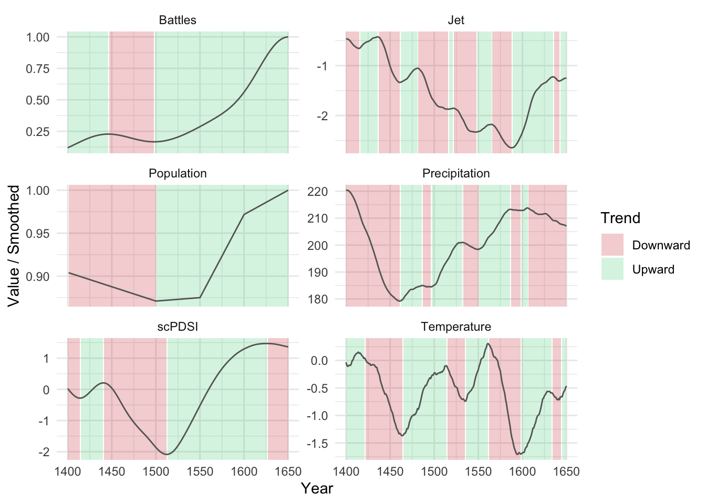
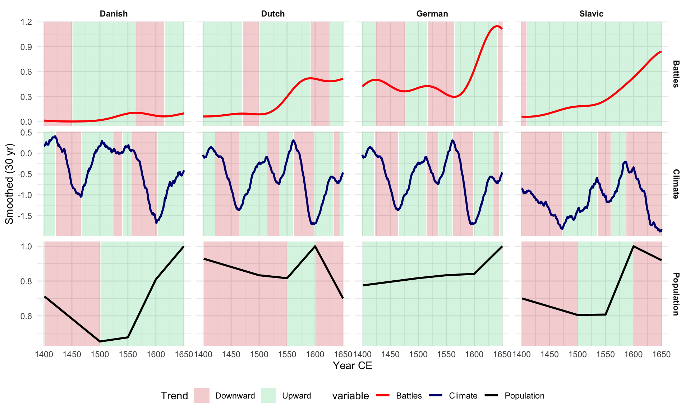
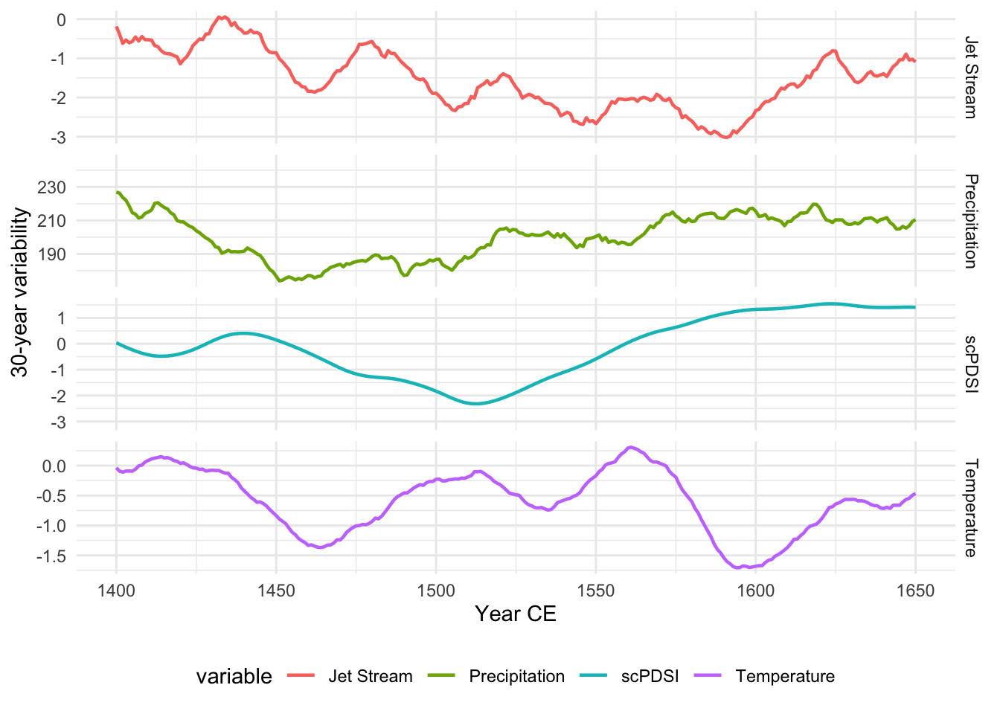
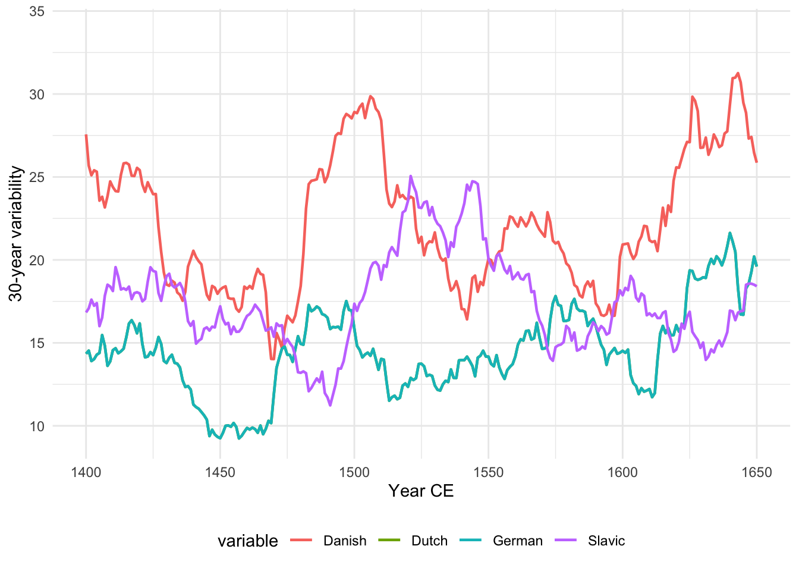

This script is the master script for the analyses carried out in the paper titled:
Abstract
Data preparation
Before running the analyses, we need to prepare the data. The cities need to be divided by ethno-linguistic groups (Dutch, German, Slavic, Scandinavian).
Reading layer `nodes' from data source
`/Users/au786282/AUPaper1/data/derived_data/nodes.gpkg' using driver `GPKG'
Simple feature collection with 17518 features and 44 fields
Geometry type: POINT
Dimension: XY
Bounding box: xmin: 3755759 ymin: 2908425 xmax: 6006717 ymax: 4814489
Projected CRS: ETRS89-extended / LAEA Europe
Reading layer `linguistic_areas' from data source
`/Users/au786282/AUPaper1/data/derived_data/linguistic_areas.gpkg'
using driver `GPKG'
Simple feature collection with 4 features and 1 field
Geometry type: MULTIPOLYGON
Dimension: XY
Bounding box: xmin: 1.854379 ymin: 45 xmax: 40 ymax: 65
Geodetic CRS: WGS 84
Dividing the cities by region and calculating the total urban population for each time frame considered.
To visualise the data set eval: true in the following chunk.
Urban population over time.
Figure 1
Determine the total regional urban population for every time frame considerd and calculate the relative share of the popualtion of each city.
If you want to plot the graphs set eval: true in the next chunk.
Share of the total population of individual cities in the entire area and by region.
Figure 2
Ranking cities by size for every region and period.
If you want to plot the trend of the largest cities in the whole areas set eval: true in the next chunk.
A good way to visualise trends for individual cities is by plotting them using sankey plonts in which the location of a city is determined by their rank and their width by their absolute population.
Sankey plots of the most important cities in the study region by region.
Figure 3
Total change (adapted CHURN)
Total change is measured as the sum of the number of position that each city in a region (and globally) changed at each time step, regardless of the sign of the chaneg (negative or positive).

Figure 4: Amount of change per time frame by region. Every change in rank (up or down) is summed and normalised to the length of the time frame.
The change can also be visualised in terms by discriminating the different types of change. To plot it set eval: true to the next chunk.
Global success and failure rates by region.
Figure 5
To see the aggregated results over time and to understand from which cohort successful and unsuccessful cities are coming from set eval: true to the next chunk.
Aggregated change trends over time. This figure is similar to Figure 5 but traces the the origin of stability, failure and success.
Figure 6
Correlations
In this section, changes in each region are tested against climate and conflict data.
Conflict
Conflict data are derived from Miller & Shuvo Bakar (2022).

Figure 7: Density of conflict over time in the study area and in its sub-regions after the year 1000 CE.
Climate
There are several available datasets for the study region. Whenever possible we preferred dendro data, as they are based on treering measurments and not on a model output. Besides treering data, we included North Atlantic-European Sector Jet Stream reconstructions.

Figure 8: CLimate proxies used in this study.
Combined visualisation
Now we compare the climatic and conflict data to the adapted-CHURN. First we can plot each variable with the relevant climate and proxy proxies.

Figure 9: Change, climate proxies and density of battles in the entire study area (1400–1650 CE).

Figure 10: Regional change, temperature and density of battles (1400–1650 CE).
Global trends
A first assessment of how different proxies might be related consist in looking at phases of sustained increase vs. decrease.

Figure 11: Global trends of change. Climate trends are smoothed to 30 years but the yearly estimates are plotted.

Figure 12: Regional proxies and phases of change. The climatic trends are smoothed to 30 years.
Climate variability
Instead of focusing on upward or downward trends we can look at how much climate changed, regardless of its direction. As a working H0 we would assume that people are adapted to stable conditions and changes might impact their lifestyle, regardless of whether this change is in general better or worse (which is what we were calculating previously).

(a) Global. Temperature is the same as for central Europe.

(b) Regional.
Figure 13: Global and regional climatic variability. Absolute variation is measured using a rolling mean with a bandwith of 30 years.